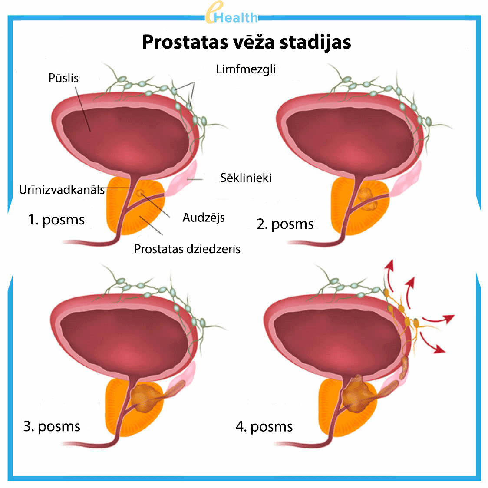
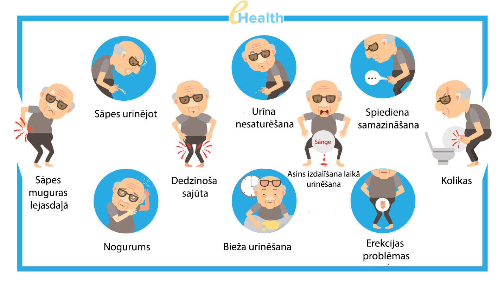
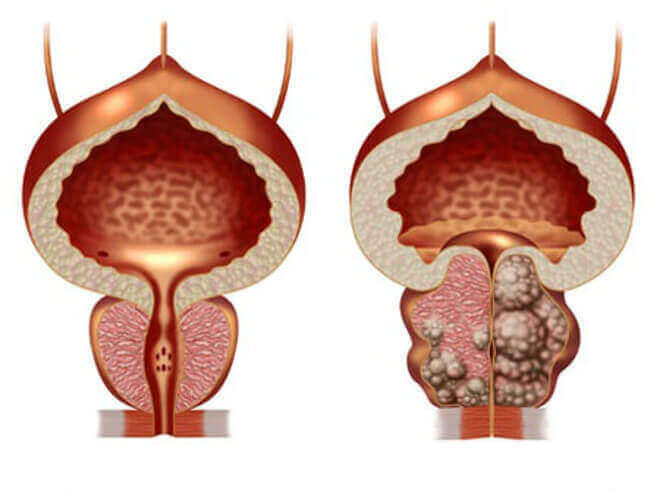
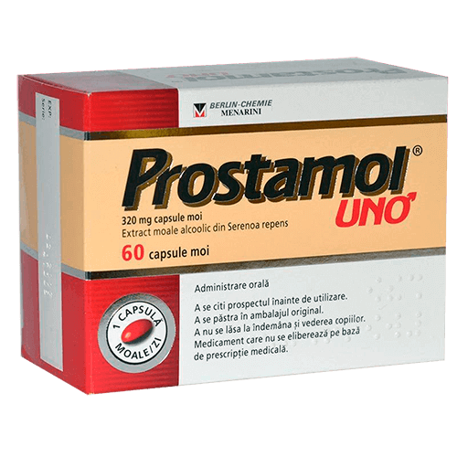

IZRAĒLĀ vīrieši ārstē prostatītu 2-3 nedēļu laikā, vienu
reizi un uz visiem laikiem.
(ārstēšanas metode aprakstīta zemāk)
Tajā laikā: alkanu ārstu sazvērestība ar aptiekām noslēpa iedarbīgus preparātus un ik gadu izkrāpj naudu no vīriešiem.
Prostatīts ir visizplatītākā slimība vīriešu vidū vecumā virs 40 gadiem, turklāt ārsti atzīmē nepatīkamu tendenci – slimība paliek arvien ‘’jaunāka’’. Pie ārstiem arvien biežāk griežas vīrieši ar ‘’problēmām’’ 30, 25 un pat 20 gadu vecumā.

Slimības izplatību ārsti skaidro ar vairākiem priekšnoteikumiem: ikviens vīrietis:
- - kurš ved mazkustīgo dzīvesveidu,
- - kurš ved neregulāro dzimumdzīvi,
- - kam ir kaitīgie ieradumi,
- - kurš pārslimo ar infekcijas slimībām,
- - iedzimtība,
- - stress, saslimšanās vai pārdzesēšana,
gandrīz garantētas problēmas ar prostātu. Jo vairāk priekšnoteikumu – jo ātrāk. Kāds saslims 25 gadu vecumā, turklāt kāds 45 gadu vecuma, tas ir tikai laika jautājums.
Prostātīta simptomi – pārbaudi sevi:

2018. gadā uroloģijas katedrā nopublicēja biedējošo statistiku:: vairāk nekā 55% vīrieši vecumā virs 40 gadiem saskarās ar prostātas problēmām. Noteikt prostatīta esamību diezgan viegli pat bez medicīnas izglītības, lielākoties saslimšanas simptomi ir ļoti specifiski:
-
Stiepjošas vai dedzinošas sāpes:
- - vēdera apakšā, sēklinieku maisiņā;
- - starpenē vai dzimumloceklī;
-
Urinēšanas traucējumi:
- - bieža urinēšana, dedzināšana uretrā;
- - sajūta, ka ‘’urīnpūslis nav līdz galam iztukšots’’;
- - apgrūtināta urinēšana (vāja strūkla);
-
Dzimumfunkcijas traucējumi:
- -dzimumdziņas samazināšana;
- - erekcijas garuma un kvalitātes pasliktināšanās;
-
Ejakulācijas traucējumi:
- - priekšlaicīga ejakulācija vai problēmas ar to sasniegšanu;
- - vāja ejakulācija.
-
Kā arī paaugstināts nogurums un organisma ātrais sakaitinājums.
Pat neskatoties uz pamanāmo dzīves kvalitātes samazināšanos, daudzi vīrieši gadiem ilgi dzīvo ar prostatītu, pat nenojaušot par neatgriezeniskām sekām, pie kam var novest it ka ar dzīvi savienojamas nepatīkamas izjūtas.

Daļēji vīrieši attieksme ir saprotama, prostatas diagnostika jebkuram šo procesu saprašana vīrietim izraisa nepatīku un apmulsumu. Papildus lielākoties pēc diagnozes ‘’prostatīts’’ saņemšanas urologa apmeklējumi kļūst par katru gadu mocībām. Ārsti noņem akūtus simptomus ar ‘’farmaceitu ieteiktiem’’ preparātiem, turklāt ar katru nākamu pārdzesēšanas gadījumu vai režīma neievērošanu prostatīts paradās atkal un atkal.
Kā prostatītu ārstē pie mums (un kā to NEVAJAG ĀRSTĒT)
Visbēdīgākais ir tas, ka jūs nevarat tikt vaļā no prostatīta, pat ja jūs to ļoti gribat.
Prostatīta ārstēšanas standarta procedūra:
- Vīrietis griežas poliklīnikā. Valsts vai privātā – nav nekādas nozīmes, jo galu galā tik un tā jāmaksā.
- Ārsts nosūt uz izmeklējumu, nozīme vairākas analīzes. Vairākas analīzes pat nav vajadzīgas, bet mazum kas vēl atradīsies, kas jāizārstē. Papildus pašas analīzes maksā daudz naudas.
- Pēc izmeklējuma ārsts uzliek diagnozi ‘’prostatīts’’ un izraksta ‘’ieteicamus preparātus’’. Izrakstāmie preparāti noņem slimības akūtus simptomus, toties neārstē hronisko prostatītu. Protams, urologs izraksta zāles no kompānijām, kas pārstāvji samaksāja viņam vēl vairāk. Šie preparāti visiem ir labi zināmi.
- Papildus ‘’ieteicamiem’’ preparātiem simptomu noņemšanai ārsti vienmēr ieteica
prostatas rektālo masāžu vai aparātu ārstēšanu ar līdzīgu efektu. Šī procedūra ir pazemojoši un
nepatīkami – masāžu veic ar pirkstu caur anālo atvērumu. Vidēji masāžas kurss ietilpst 10-14 reizes.
Par katru reizi, protams, atsevišķi jāmaksā. Vairākas Eiropas valstīs šo masāžu nepraktizē jau
vairāk nekā 20 gadus, jo mūsdienu zāles ārstē prostatītu bez masāžas!
- Papildus pamatārstēšanai ārsti bieži izraksta preparātus, kas uzlabo seksuālas funkcijas, uzlabo spermas kvalitāti, ‘’atjauno organismu’’ pēc antibiotiķu lietošanas un tml.
Rezultātā vienreizēja prostatīta ārstēšanas izmaksā vairākus simtus eiro, uroloģi veido terapijas kursu, pirmkārt ņemot vērā pacienta finansiālas iespējas. Šajā gadījumā tiks noņemti tikai galvenie, akūtie simptomi. Hroniskas prostatīts paliek un atgriezīsies atkal, kad vīrietis pārdzēsis vai neievēros ieteikto uztura režīmu. Rezultātā norādītas summas jāmaksā katru gadu — uz to balstījās urologu un farmaceitu kopējais bizness.
Kā prostatītu ārstē vīrieši Eiropā (kā to JĀĀRSTĒ)
Izraēlā, lai izārstētu prostatītu, pat nav obligāti vērties pie ārsta. Pietiekami pirmajiem simptomiem iestājoties aiziet uz aptieku un nopirkt jau sen pārbaudītu līdzekli, kas nav pieejams tirgū tika tāpēc, ka tie palīdz izārstēt hronisko prostatītu (vienu reizi un uz visiem laikiem)! Protams, ka šis preparāts nav izdevīgs vietējai aptieku mafijai – jo daudz izdevīgāk ‘’pieradināt’’ cilvēkus ik gadu noņemt sāpju simptomus, nekā ārstēt slimību ar cenas ziņā ikviena, cilvēkam pieejamo preparātu.
Atšķirībā no mūsu valsti Izraēlā labi attīstīta veselības apdrošināšana. Apdrošināšanas
kompānijas nav ieinteresēti, lai katrs otrais vīrietis apmeklētu ārstus divreiz gadā – jo kompānijas
to visu apmaksā, toties ārstu algas tur ir krietni lielākas. Tieši otrādi, viņi ir ieinteresēti, lai
ārstēšana būtu maksimāli efektīva un ātra. Vienu reizi un uz visu mūžu.
Izraēlā apdrošinātāju
intereses uzveica aptieku mafiju un par laimi visiem vīriešiem viegli pieejams preparāta prostatīta
ārstēšanaipārdošanā...
Vai situācija mainīsiesuz labāko pusi?
Diemžēl, nav jāgaida pozitīvas pārmaiņas Latvijas aptieku un ārstu darbības jomā – jo farmācijas bizness ir ļoti ienesīgs, un peļņu no tā saņem visaugstākās valsts amatpersonas.
Toties šodien nav obligāti jānopērk zāles aptiekās. Tas ir izdarāms caur īpašām interneta tīmekļa vietnēm. Pavisam nesen viens no efektīvākiem Izraēlas preparātiem – parādas arī mūsu tirgū. Gandrīz uzreiz tas izcīnījis pacientu uzticību un simpātijas.
Salīdzināsim, ar ko atšķiras no Latvijā populāra prostatīta ārstēšanas preparāta Prostamol, kas ir viegli nopērkams visās aptiekās:

|
 Prostamol |
|
|---|---|---|
| Cena: | 50% ATLAIDE | Ap 20 eiro par 1470 supozitoriji. Ieteicams ārstēšanas kurss: 3 paciņas = 60 eiro |
| Ražošanas forma: | 30 ml, stikla burkā ar pilinātāju | rektālās sveces: 10 gab. iepakojumā |
| Iedarbība: | Pilnībā atbrīvo no prostatīta, tajā skaitā no hroniska. Uz visiem laikiem. | Noņem tikai prostatīta akūtus simptomus – sāpes un urinēšanas traucējumus. |
| Papildus iedarbība: | º Pastiprina libido º Novērš ātru priekšlaicīgu ejakulāciju º Uzlabo potenci º Normalizē urīnpūšļa darbību º Uzlabo asinsvadu veselību" |
Fēču mīkstināšana, zarnu peristaltikas pastiprināšana |
| Blakusparādības, kaitējums organismam | Nav. Pilnīgi dabisks sastāvs. | º Biežas lietošanas gadījumā var izraisīt ļaundabīgas izmaiņas
prostatā. º Samazina potenci º Izraisa problēmas ar zarnu darbību º Nomāc imunitāti, veicina alerģijas veidošanās º Izraisa stipras sāpes kuņģī." |
| Iedarbības princips: | Kompleksā iedarbojas uz prostatu ar īpaši piemērotu sastāvu no 11 dabiskiem komponentiem, nodrošina pretiekaisuma un spēcinošu iedarbību. Izvada no prostatas patogēnās floru, uzlabo prostatas struktūru un funkciju. Ieteicams hroniska, sastinguma un bakteriālā prostatīta gadījumā. | Uz laiku noņem sāpju izjūtas prostatā, maskējot slimības gaitu. Turklāt pēc preparāta iedarbības beigšanos slimība atkal saasinājās. |
| Sastāvs: | Dabiskie augu izcelsmes komponenti un vitamīni | Samprost, kalcija stereāta monohidrāts, krospovīdons, trietilcitrāts, titāna dioksīds un cita ķīmija |
| Garantija: | Garantija no ražotāja 365 dienas | nav garantiju |
Mūsu valstī ražotājam toties izdevās padarīt šo preparātu pieejamo ikvienam! Pēc garam pārrunām "ar vajadzīgām personām" izdevās palaist valsts programmu "Vīriešu veselība". Programmas mērķis: dot ikvienam vīrietim iespēju izārstēt prostatītu, nesagaidot vēzi vai nāvi, nav atkarībā no pacienta finansiālā stāvokļa. Šī valsts programmas ietvaros jūs saņemsiet pilnīgi 50% atlaidi
nopērkams uz oficiālās vietnes.
Pret šo preparātu jau uzsākta plaša kampaņa, kas iniciēja valsts lielāki aptieku tīkli. Iespējams, drīzumā preparāts pazudīs no pārdošanas. Ieteicam iegādāties visiem vīriešiem, kamēr tas vēl ir iespējams. Līdz (ieskaitot) preparāts tiks izsniegts 50% atlaidi

Aza Kaufmane, Izraēlas Paula Erlīha biomedicīnas ārstniecisko līdzekļu institūta vadītāja, uroloģijas katedras profesore
Prostatīta neinvazīvā ārstēšana, lietojot dabisko piedevu ar Gotu Kola sastāvā, pirmo reizi atklāja Izraēlas uroloģe Aza Kaufmane Izraēlas Paula Erlīha biomedicīnas ārstniecisko līdzekļu institūta veiktajā pētījuma ietvaros.
Aza Kaufmane pirmoreiz klīniski pierādīja savas metodes 98% efektivitāti un uzsāka lietot savā praksē piedevu ar (gota KOLA) piedevu, ārstējot akūtu un hronisko prostatītu.
Kopš 1996. gada – piedevas ar kļūst par medicīnas standartu un tiek ieteikts Izraēlas ārstnieciskajā praksē un vēlāk arī citās valstīs.
Vienīgais preparāts, kas efektivitāti un drošību atzina Izraēlas zinātniska kopiena, tiek pārdots Latvijā zem nosaukuma "".
Komentāri
Mairis D. (Rīga)
Paldies par interesantu rakstu! Latvijā viss ir piekukuļots visaugstākajā līmenī. Labi, ka internets pagaidām visiem ir pieejams. Pasūtīju šo preparātu ar 50% atlaidi. Āratēšos.
Sandis Krauklis (Ogre)
Pilnībā apstiprinu! ir brīnumpreparāts. Nopērku to Melnkalnē, kad pagājušogad braukāju atpūsties, tikai gandrīz par 25 eiro. Pirms tam mocījos ar hronisko prostatītu gandrīz 10 gadus. Mēģināju ārstēties, bet, kā iepriekš minēts, ārstēšanas efekts ir ļoti īslaicīgs. Lietojot , prostatīts pārgāja daudz ātrāk. Jau pusgadu nav neviena simptoma. Pirms tam varēju tikai sapņot par to. Ieteicu visiem džekiem. Tas palīdzēs!
Teo (Rīga)
Pasūtīju. Tiešām 50% atlaidi saņemu iepakojumu.))) Patīkami pārsteigts. Paldies!
Harijs G. (Madona)
Mani arī ir prostatīta ārstēšanas pieredze ar šo preparātu. Pērku minētāja vietnē, turklāt bez jebkādām akcijām, cena bija ap 30 eiro. Naudas nav žēl, galvenais, ka preparāts palīdzēja tikt galā ar prostatītu tikai 2 nedēļu laikā bez jebkādām masāžām.
Māris (Alūksne)
Pasūtīju
Reinis Ozols (Liepāja)
Nesen skatījos teleraidījumu par Latvijas farmācijas biznesu. Žurnālistu izmeklēšanās. Tur arī stāstīja par šo preparātu. Pagaidām preparāts vēl ir pieejams, toties drīzumā tā varētu arī nebūt. Jāķer, kamēr ir.
Pauls Z. (Ainaži)
Hroniskais prostatīts no 28 gadiem. Tagad man ir 41 gads. Par šo laiku ārstējos divreiz, akūtu paasinājumu gadījumos. Pēdējā reizē ārstiem izdevās mani izglābt. Pēc viņu teiktā, vēl mazliet un prostatīts pāries uz prostātas vēzi. Tāpēc visiem ieteicu, kam ir prostatīts, jāatbrīvojas no tā pēc iespējas ātrāk. Tas ir ļoti bīstama kaite.
Zane (Nereta)
Savam vīram jāpasūt. Paldies!
Ronalds (Kuldīga)
Patiešām saņemu ar 50% atlaidi iepakojumu. Nekad iepriekš nav redzējis šo akcijas. Paldies ražotājiem!
Darens (Rīga)
ir labākais no labākiem! Piekrītu ar raksta autoru un visiem komentētajiem, kuri slavēja preparātu. Lietoju to pirms 3 mēnešiem. Prostatīts pilnība pārgājis! Pirms tam mocījos vairākus gadus, no tā bija slikta erekcija, pārāk ātri beidzu. Tagad viss normalizējas.
Andris Pērkums (nav zināms)
+500. Lielisks līdzeklis
Didzis U. (Kalngale)
Sīkāk par izlasīju uz vietnes. Iespaidīgi! Pasūtīju. Solīja, ka varēšu saņemt pastā pēc 5 dienā. Ērti.
Jānis (Rēzekne)
Čali, tas ir īsts brīnums! Saņemu pagājušonedēļ. Tagad nav neviena prostatīta simptoma. Pazuda sāpes, vairs neapmeklēju tualeti tik bieži, vairs nav dedzinošas sajūtas urinēšanas laikā. Papildus būtiski uzlabojas potence un palielinājās dzimumakta ilgums. Lieliska pašsajūta, noteikti ir vērts nopirkt. Gatavs par to samaksāt pāris desmit eiro. Patīkami pārsteigts ar preparāta efektivitāti.